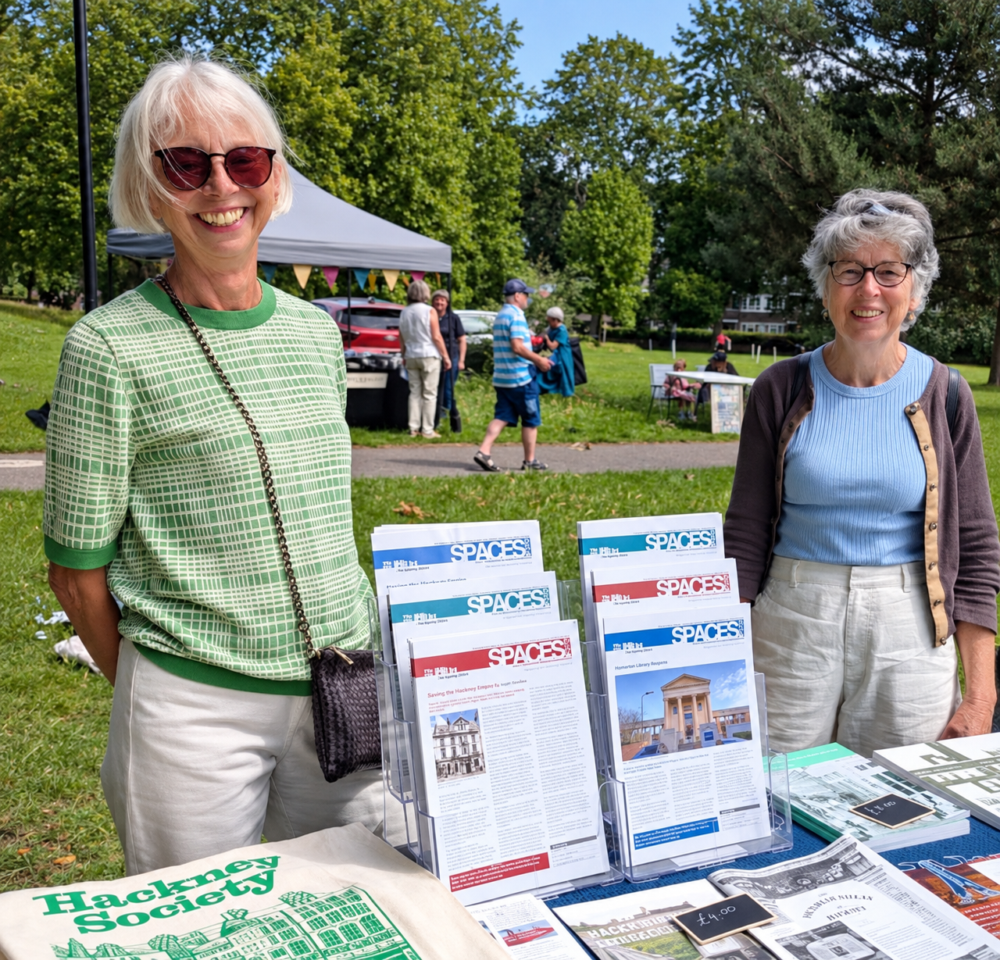
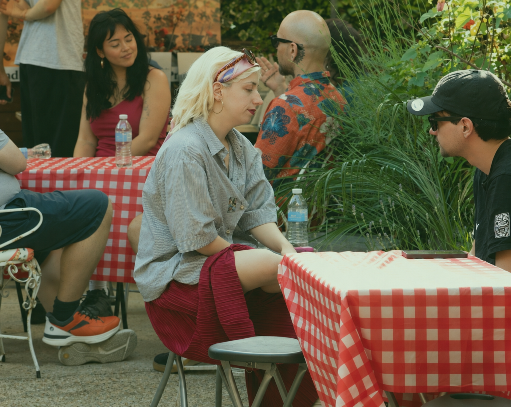

Make history with us
Get
involved.
A festival is made with the people who know, question and care about Hackney.
We are keen for as many people as possible to get involved. Whether you have an idea, a story to share or would like to help, we would love to hear from you.

There is a place for you
Bring what you know.
-
01
Share a story
Tell us about a memory, a person or a place that deserves to be remembered.
-
02
Bring an idea
Suggest a subject, a question or a route that could open up a new conversation.
-
03
Offer support
If you have time, skills or a connection that could help, start a conversation with us.
Your view matters
You don’t need to be a historian.
Local knowledge, family memories and simple curiosity all have a place in the festival.
A question can be a starting point. Together, we can make space for the stories that shape Hackney.

START A CONVERSATION
Have an idea or want to help?
Tell us about an idea, a story or a way you would like to get involved. Email us at hackneyhistoryfestival@gmail.com.